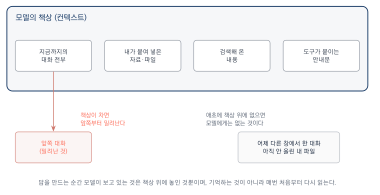

AI는 어떻게 답을 만드는가
이 장을 마치면
- 언어 모델이 다음 낱말을 고르는 방식을 수식 없이 설명할 수 있다.
- 같은 질문에 매번 다른 답이 나오는 이유를 말할 수 있다.
- 환각이 왜 생기는지 설명하고, 어떤 작업에서 위험한지 판단할 수 있다.
- 컨텍스트가 무엇이며 왜 앞의 대화를 잊어버리는지 안다.
- 좋은 답이 나올 확률을 높이는 조건을 열거할 수 있다.
도구를 쓰기 전에 그 도구가 무엇을 하는 물건인지는 알아야 한다. 망치가 못을 박는 물건임을 알면 나사에는 쓰지 않는다. 인공지능을 쓰다가 낭패를 보는 경우는 대부분 이 도구가 무엇을 하는 물건인지 모른 채 쓰기 때문이다.
이 장은 원리를 다루지만 수식이나 코드는 쓰지 않는다. 목표는 인공지능을 만드는 것이 아니라, 왜 그런 답이 나왔는지 짐작할 수 있게 되는 것이다. 그 짐작이 되면 어떤 답을 그대로 써도 되는지, 어떤 답은 반드시 확인해야 하는지를 스스로 판단할 수 있다.
2.1 다음 낱말을 고르는 기계
우리가 쓰는 인공지능 도구의 속에는 언어 모델language model이 들어 있다. 이름이 거창하지만 하는 일은 놀랄 만큼 단순하다. 앞에 나온 말을 보고 다음에 올 말을 고른다. 그것을 아주 여러 번 반복한다.
빈칸 채우기를 아주 잘하는 것
다음 문장의 빈칸에 무엇이 들어갈지 생각해 보자.
아침에 일어나서 세수를 하고 을 닦았다.
거의 모두가 이를 떠올렸을 것이다. 손도 가능하고 창문도 문법적으로는 틀리지 않는다. 다만 그럴 가능성이 낮다고 느낀다. 우리가 한국어 문장을 수없이 읽고 들으면서, 어떤 말 뒤에 어떤 말이 오는지에 대한 감각을 갖게 되었기 때문이다.
언어 모델은 이 감각을 아주 큰 규모로 만든 것이다. 인터넷의 방대한 글을 읽으며 이 말 다음에는 저 말이 자주 오더라를 익혔다. 그리고 답을 만들 때 그 감각에 따라 한 낱말씩 고른다.
언어 모델은 문장을 이해하고 답을 아는 것이 아니라, 그럴듯한 다음 말을 고르는 것이다. 이 한 문장이 앞으로 만날 거의 모든 현상 — 매번 다른 답, 그럴듯한 거짓말, 긴 대화에서의 망각 — 을 설명해 준다.
하나가 아니라 여러 후보 중에서
정확히는 다음 말 하나를 고르는 것이 아니라, 가능한 후보들에 저마다 점수를 매긴다. 앞의 예에서라면 대략 이런 모양이다.
| 후보 | 그럴듯함 | 비고 |
|---|---|---|
| 이 | 아주 높음 | 가장 흔한 조합 |
| 손 | 높음 | 자연스럽다 |
| 얼굴 | 보통 | 앞에 세수가 있어 겹친다 |
| 창문 | 낮음 | 문법은 맞지만 어색하다 |
| 사과 | 아주 낮음 |
그다음이 중요하다. 모델은 항상 1등을 고르지 않는다. 점수에 비례한 확률로 뽑는다. 그래서 대체로 이가 나오지만 가끔 손이 나온다. 같은 질문에 매번 조금씩 다른 답이 돌아오는 이유가 이것이다.
이 과감함의 정도를 조절하는 값을 흔히 온도temperature라고 부른다. 온도가 낮으면 1등만 계속 고른다 — 답이 안정적이지만 뻔해진다. 높으면 아래쪽 후보도 자주 뽑는다 — 답이 다양해지지만 엉뚱해지기도 한다. 도구에 따라 이 값을 직접 바꿀 수 있는 곳도 있고, 숨겨 둔 곳도 있다.
| 하려는 일 | 유리한 쪽 | 이유 |
|---|---|---|
| 아이디어를 여러 개 받기 | 다양하게 | 겹치지 않는 후보가 필요하다 |
| 자료를 정해진 형식으로 정리 | 안정되게 | 매번 형식이 달라지면 곤란하다 |
| 코드를 만들기 | 안정되게 | 창의적인 코드는 대개 안 돌아간다 |
| 글의 표현을 다듬기 | 중간 | 여러 안을 보고 고른다 |
낱말이 아니라 조각
엄밀히 말하면 모델이 고르는 단위는 낱말이 아니다. 토큰token이라고 부르는, 낱말보다 작을 수도 있는 조각이다. 영어에서는 대체로 낱말 하나가 토큰 하나이지만, 한국어는 조사와 어미가 붙어 여러 조각으로 나뉘는 경우가 많다.
이 사실이 실무에서 두 가지로 나타난다. 첫째, 같은 내용이라도 한국어가 영어보다 토큰을 더 많이 쓴다. 그래서 사용량 한도에 조금 더 빨리 닿는다. 둘째, 모델이 글자 단위로 세는 일 — 이 문장의 글자 수를 세어 줘 같은 요청 — 을 의외로 자주 틀린다. 조각으로 보고 있기 때문에 글자가 몇 개인지는 직접 보이지 않는 것이다.
글자 수 세기, 정확한 자릿수 계산, 끝에서 세 번째 글자 같은 요청은 언어 모델이 약한 영역이다. 이런 일은 사람이 하거나, 11장에서 배울 파이썬처럼 정확히 세는 도구에게 시켜야 한다.
그런데 왜 코드를 쓸 수 있는가
여기서 자연스러운 의문이 생긴다. 다음 말을 고르는 것뿐이라면, 어떻게 동작하는 코드를 만들어 낼까?
코드도 결국 글이기 때문이다. 그리고 코드는 보통의 글보다 규칙이 훨씬 엄격하다. if라고 썼으면 다음에 조건이 오고, 괄호를 열었으면 닫아야 한다. 규칙이 엄격하다는 것은 다음에 올 것이 정해져 있다는 뜻이고, 그래서 다음 조각을 고르는 일에 오히려 유리하다. 게다가 인터넷에는 사람이 쓴 코드가 엄청나게 많아서 재료도 풍부했다.
다만 잊지 말 것은, 모델이 코드를 실행해 보고 맞는지 확인한 것이 아니라는 점이다. 그럴듯하게 생긴 코드를 만든 것이다. 그럴듯하게 생겼지만 돌아가지 않는 코드가 나오는 이유가 여기에 있고, 3장의 에이전트가 필요한 이유이기도 하다. 에이전트는 그것을 실제로 실행해 본다.
2.2 학습한 것과 학습하지 못한 것
언어 모델의 감각은 읽은 것에서 나온다. 그러므로 무엇을 읽었는지가 곧 무엇을 잘하는지를 결정한다. 이 절에서는 그 경계를 그려 본다. 경계를 알면 어떤 질문에 답을 기대할 수 있고 어떤 질문은 처음부터 다르게 물어야 하는지 판단할 수 있다.
많이 본 것은 잘한다
인터넷에 자료가 많은 주제일수록 답이 좋다. 널리 쓰이는 프로그래밍 언어, 유명한 도구의 사용법, 교과서에 실릴 만한 개념, 오래된 역사적 사실 — 이런 것은 대체로 믿을 만하다. 여러 곳에서 같은 이야기를 반복해 읽었기 때문이다.
반대로 자료가 적은 주제는 답이 급격히 나빠진다. 그리고 나빠지는 방식이 고약하다. 모른다고 하는 것이 아니라 아는 것처럼 말한다. 이 문제는 다음 절에서 따로 다룬다.
| 주제 | 자료의 양 | 기대할 수 있는 것 |
|---|---|---|
| 파이썬으로 표 다루기 | 아주 많음 | 거의 그대로 쓸 만함 |
| 일반적인 통계 개념 | 많음 | 설명은 정확, 예시는 확인 필요 |
| 국내 특정 학회의 관행 | 적음 | 그럴듯한 추측이 섞임 |
| 우리 학과의 졸업 요건 | 없음 | 거의 전부 지어냄 |
| 어제 발표된 정책 | 없음 | 시점 자체를 모름 |
어제 일은 모른다
모델은 어느 시점까지의 자료로 만들어진다. 그 시점을 지식 컷오프knowledge cutoff라고 부른다. 그 이후에 일어난 일은 알지 못하며, 더 곤란하게도 모른다는 사실조차 모를 때가 있다.
요즘 도구들은 이 약점을 웹 검색으로 메운다. 질문을 받으면 먼저 검색을 하고, 찾아온 내용을 바탕으로 답을 만든다. 그래서 최신 정보를 물었을 때 답이 맞기도 한다. 다만 이때 확인할 것이 있다.
- 이 도구가 지금 검색을 한 것인지 아니면 기억으로 답한 것인지
- 검색했다면 어디를 봤는지 (출처가 표시되는가)
- 그 출처가 믿을 만한 곳인지
출처가 표시된다면 반드시 한 번은 눌러 보자. 링크가 표시되어 있는데 실제로는 그 내용이 없는 경우도 있다.
방금 답한 내용 중 어느 부분이 검색한 자료에서 나온 것이고 어느 부분이 네가 원래 알고 있던 것인지 구분해서 표시해 줘. 검색한 부분은 출처 주소를 함께 적어 줘.
우리 학교 사정은 절대 모른다
이 점을 특히 강조하고 싶다. 학사 규정, 학과 내규, 동아리 회칙, 실습 기관의 절차 — 이런 것은 인터넷에 공개되어 있지 않거나 공개되어 있어도 모델이 읽지 않았다. 그런데 물어보면 답이 나온다. 다른 학교의 일반적인 사정을 바탕으로 그럴듯한 것을 만들어 내기 때문이다.
일반적으로 4년제 대학의 졸업 요건은 전공 60학점 이상, 교양 30학점 이상, 총 130학점입니다. 또한 대부분의 학교에서 졸업 논문 또는 졸업 시험을 요구합니다. (그럴듯하지만, 여러분의 학교 요건과 맞을 가능성은 절반도 되지 않는다. 그리고 이 답에는 학교마다 다르다는 경고가 없다.)
해결책은 간단하다. 자료를 주고 물으면 된다. 학사 안내 PDF를 붙여 넣고 그 안에서 찾아 달라고 하면 답이 완전히 달라진다. 이것이 다음다음 절에서 다룰 컨텍스트의 힘이고, 3장에서 에이전트가 도구를 쓴다고 할 때의 핵심이기도 하다.
모델이 모르는 것을 아는 것처럼 답할 때, 잘못은 모델이 아니라 자료를 주지 않고 물은 쪽에 있다고 생각하는 편이 실용적이다. 답이 나빠지면 무엇을 주지 않았는가를 먼저 살펴보자.
글이 아닌 것은 더 어렵다
언어 모델은 글로 배웠다. 그래서 글로 표현하기 어려운 것에 약하다.
정확한 계산. 숫자 계산은 규칙이지 언어가 아니다. 간단한 것은 맞히지만 자릿수가 커지면 틀린다. 요즘 도구는 이런 요청을 만나면 속으로 계산기를 돌리거나 코드를 실행한다 — 이것도 3장에서 말할 도구 사용이다.
공간과 그림. 왼쪽에서 세 번째 칸, 표의 대각선 같은 것을 자주 헷갈린다.
최신 화면. 어떤 서비스의 버튼이 지금 어디 있는지는 모른다. 화면은 자주 바뀌고, 모델이 배운 것은 예전 화면이다. 이 책이 화면 캡처를 최소한으로 쓰는 이유와 같은 이유다.
지금까지의 내용을 뒤집으면 잘 시키는 일의 목록이 된다. 글을 다듬는 일, 구조를 잡는 일, 여러 대안을 늘어놓는 일, 긴 글에서 요점을 뽑는 일, 형식을 바꾸는 일, 코드의 초안을 만드는 일. 이런 일은 자료가 많고 언어에 가깝다. 4–7장에서 인공지능에게 맡길 일이 대부분 이 목록 안에 있다.
2.3 환각: 왜 틀린 답을 당당하게 말하는가
인공지능이 사실이 아닌 내용을 그럴듯하게 만들어 내는 현상을 환각hallucination이라고 부른다. 이름 때문에 무슨 오작동처럼 들리지만, 그렇지 않다. 고장이 아니라 구조의 결과다.
왜 필연적인가
2.1절에서 본 대로 모델은 그럴듯한 다음 말을 고른다. 그런데 그럴듯함과 사실임은 다른 성질이다. 존재하지 않는 논문 제목도 그럴듯하게 생길 수 있고, 없는 함수 이름도 있는 것처럼 생길 수 있다. 모델에게는 그 둘을 구분할 방법이 없다. 사실 여부를 판정하는 장치가 안에 들어 있지 않기 때문이다.
게다가 모델은 모르겠다는 말을 잘 하도록 만들어지지 않았다. 학습에 쓰인 글 대부분이 자신 있게 쓰인 글이었다. 그래서 모르는 것을 만나도 모르는 사람이 쓴 문장이 아니라 아는 사람이 쓸 법한 문장을 만들어 낸다.
환각은 잘 모르는 영역에서, 자신 있는 문체로 나타난다. 그래서 말투로는 절대 구분할 수 없다. 확신에 찬 어조는 정확도의 신호가 아니다.
어떤 모습으로 나타나는가
- 없는 것을 있다고 한다. 존재하지 않는 책·논문·법 조항·기능 이름. 형식은 완벽하다.
- 있는 것을 잘못 말한다. 실제 있는 제도인데 요건이나 숫자가 틀리다.
- 맞는 부분과 틀린 부분이 섞인다. 가장 위험하다. 절반이 맞으니 나머지도 맞아 보인다.
- 시키는 대로 지어낸다. 관련 논문 다섯 편을 찾아 줘라고 하면, 없어도 다섯 편을 만들어 낸다. 다섯 편을 요구받았기 때문이다.
마지막 항목은 우리 쪽 잘못이 크다. 개수를 정해 주면 모델은 그 개수를 채우려 한다. 있으면 알려 주고 없으면 없다고 해 줘라고 덧붙이는 것만으로도 상당히 줄어든다.
추천 논문
1. 김(2021), 대학생의 학습 몰입에 관한 연구, 한국교육학회지, 39(2).
2. 이(2019), 교양교육에서의 문제해결 역량 측정, 교양교육연구, 13(4).
3. …
(형식은 완벽하지만, 이 목록에서 실제로 존재하는 것은 하나도 없을 수 있다. 논문은 반드시 학술 검색 사이트에서 제목으로 다시 찾아 확인해야 한다.)
어디에서 위험한가
환각이 언제나 문제는 아니다. 위험한 자리와 위험하지 않은 자리를 구분해 두면 검증에 쓸 힘을 아낄 수 있다.
| 하는 일 | 위험도 | 이유 |
|---|---|---|
| 아이디어를 늘어놓게 하기 | 낮음 | 고르는 것은 사람이다 |
| 글의 표현을 다듬기 | 낮음 | 눈으로 바로 확인된다 |
| 구조·분류를 제안받기 | 보통 | 그럴듯한 헛구조가 나올 수 있다 |
| 코드를 만들기 | 보통 | 실행해 보면 드러난다 |
| 사실·수치·인용을 묻기 | 높음 | 확인 전에는 절대 쓸 수 없다 |
| 규정·법·의료·안전 | 아주 높음 | 틀리면 사람이 다친다 |
표 2.4에서 코드가 보통인 이유는 검증이 쉽기 때문이다. 돌려 보면 안 되는 것은 안 된다고 나온다. 반면 사실과 수치는 돌려 볼 방법이 없어 사람이 일일이 확인해야 한다. 검증 비용이 위험도를 결정한다고 생각하면 판단이 쉬워진다.
줄이는 방법
없앨 수는 없지만 눈에 띄게 줄일 수는 있다.
자료를 준다. 앞 절에서 본 대로다. 답의 근거가 될 자료가 눈앞에 있으면 지어낼 필요가 줄어든다. 가장 효과가 크다.
모른다고 말할 여지를 준다. 질문 끝에 한 줄을 덧붙인다.
확실하지 않은 내용은 [확인 필요]라고 표시해 줘. 모르는 것은 지어내지 말고 모른다고 해 줘. 없으면 없다고 해도 된다.
확인할 수 있는 형태로 답하게 한다. 출처, 조건, 근거를 함께 요구하면 검증이 쉬워진다. 검증할 수 없는 형태의 답은 검증하지 않게 되고, 검증하지 않은 답은 언젠가 사고가 된다.
두 번 묻는다. 같은 질문을 새 대화에서 다시 던져 답이 달라지는지 본다. 사실이면 대체로 같은 답이 나오고, 지어낸 것이면 자주 달라진다. 완벽한 방법은 아니지만 비용이 거의 들지 않는다.
정말이야? 확실해?라고 되묻는 것은 생각보다 효과가 적다. 모델은 사용자가 의심하면 답을 바꾸는 경향이 있어서, 맞는 답도 함께 철회해 버린다. 되묻기보다 근거를 대 봐, 어디에서 확인할 수 있어?라고 묻는 편이 낫다.
결국은 사람이 확인한다
이 절의 결론은 단순하다. 인공지능이 만든 것은 초안이다. 초안은 사람이 확인하고 나서야 결과물이 된다. 이 원칙은 코드에도 그대로 적용되며, 12.4절에서 다시 다룬다.
그리고 확인하려면 그 분야를 알아야 한다. 여기서 1.1절의 이야기로 돌아온다 — 자기 전공을 아는 사람만이 자기 전공에 관한 답을 검증할 수 있다. 여러분이 이 수업에서 유리한 이유가 그것이다.
2.4 컨텍스트: 지금 모델이 보고 있는 것
앞 절에서 자료를 주면 답이 좋아진다고 했다. 그 자료가 놓이는 자리를 컨텍스트context라고 부른다. 우리말로는 맥락이지만, 도구를 쓰다 보면 컨텍스트라는 말을 그대로 만나게 되므로 여기서는 그대로 쓴다.
책상 위에 펼쳐 놓은 것
컨텍스트는 모델의 책상 위라고 생각하면 편하다. 답을 만드는 순간 모델이 실제로 보고 있는 것은 그 책상 위에 놓인 것뿐이다. 무엇이 올라가 있는가?
- 지금까지 주고받은 대화 전부 — 내 질문과 모델의 답이 모두 다시 읽힌다
- 내가 붙여 넣은 자료, 올린 파일의 내용
- 검색해 온 내용(검색 기능을 썼다면)
- 도구가 자동으로 붙이는 안내문 — 사용자에게는 보이지 않지만 늘 앞에 놓여 있다
여기 없는 것은 모델에게 존재하지 않는다. 어제 다른 창에서 나눈 대화는 없는 일이고, 내 컴퓨터의 파일도 올리기 전에는 없는 것이다.

아까 말했잖아가 통하는 것은 그 대화가 아직 책상 위에 있을 때뿐이다. 모델은 기억하는 것이 아니라 매번 처음부터 다시 읽는다.
책상은 넓지만 무한하지 않다
책상에는 크기가 있다. 대화가 길어져 그 크기를 넘으면 앞쪽이 밀려난다. 그래서 다음과 같은 일이 생긴다.
- 대화 처음에 정한 규칙(모든 답을 세 문장으로)을 나중에 어긴다
- 앞에서 이미 결정한 것을 다시 묻는다
- 초반에 붙여 넣은 자료의 내용을 잊는다
- 앞에서 고친 부분을 다시 원래대로 되돌려 놓는다
마지막 항목은 8장 이후 만들기를 할 때 특히 자주 겪는다. 세 번 고쳐 놓았는데 네 번째 요청에서 첫 번째 고침이 사라져 있는 식이다. 화가 나겠지만 고장이 아니라 책상이 넘친 것이다.
| 이런 일이 생기면 | 이렇게 한다 |
|---|---|
| 앞의 지시를 어기기 시작한다 | 지금까지의 결정을 한 번에 다시 적어 준다 |
| 자꾸 옛날 버전으로 되돌아간다 | 최신 결과물을 다시 붙여 넣고 이어 간다 |
| 답이 전반적으로 흐릿해진다 | 새 대화를 시작하고 요약본을 옮겨 간다 |
| 자료를 여러 개 넣었더니 나빠졌다 | 관련 없는 자료를 뺀다 |
많이 넣는다고 좋아지지 않는다
흔한 오해가 있다. 관련 있어 보이는 것을 전부 넣으면 답이 좋아질 것이라는 생각이다. 실제로는 반대인 경우가 많다.
책상 위가 어수선하면 모델은 무엇이 중요한지 판단하기 어려워진다. 특히 서로 어긋나는 자료가 함께 놓이면 — 옛 버전과 새 버전의 규정을 함께 넣는 식으로 — 둘을 섞은 답이 나온다. 이것은 3장 이후 여러 파일을 다루기 시작하면 실제로 자주 겪는 문제다.
원칙: 필요한 것만, 최신의 것만. 자료를 붙여 넣기 전에 한 번 훑어 관계없는 부분을 지우는 30초가 답의 질을 크게 바꾼다.
언제 새로 시작해야 하는가
대화를 이어 갈지 새로 시작할지는 매번 부딪히는 판단이다. 기준을 하나 정해 두자.
- 이어 간다 — 지금까지의 맥락이 계속 필요하고, 대화가 아직 짧고, 방향이 유지될 때
- 새로 시작한다 — 주제가 바뀌었을 때, 여러 번 고쳤는데 나아지지 않을 때, 앞의 실패한 시도들이 계속 걸리적거릴 때
새로 시작할 때는 빈손으로 가지 말고 요약을 만들어 옮긴다. 다음 프롬프트가 유용하다.
지금까지의 대화를 새 대화창에 옮겨 이어 가려 한다. 다음을 정리해 줘.
1. 지금 하려는 일과 목표
2. 지금까지 내린 결정과 그 이유
3. 시도했지만 안 된 방법과 그 이유
4. 현재 상태와 다음에 할 일
새 대화에 그대로 붙여 넣을 수 있게, 설명 없이 정리된 내용만 적어 줘.
이 요약을 파일로 남겨 두면 다음 주에 이어서 작업할 때도 그대로 쓸 수 있다. 실제로 이것이 긴 프로젝트를 이어 가는 가장 실용적인 방법이다.
책상 위의 내용은 답을 만들 때마다 통째로 다시 읽힌다. 그래서 대화가 길어질수록 응답이 느려지고, 유료 서비스라면 비용도 올라가며, 무료 한도도 더 빨리 닳는다. 대화를 적당히 끊는 습관은 답의 질뿐 아니라 한도 관리에도 도움이 된다.
2.5 좋은 답이 나오는 조건
앞의 네 절에서 본 성질을 실천으로 바꿔 보자. 여기서 정리하는 것은 요령 목록이 아니라 성질에서 따라 나오는 규칙이다. 그래서 도구가 바뀌어도 그대로 통한다. 구체적인 프롬프트 작성법은 7장에서 본격적으로 다루고, 여기서는 왜 그렇게 해야 하는지만 짚는다.
다섯 가지 규칙
1. 구체적으로 묻는다. 모델은 그럴듯한 다음 말을 고른다(2.1절). 질문이 두루뭉술하면 두루뭉술한 질문에 흔히 따라오는 답이 나온다. 원하는 것을 좁힐수록 후보가 좁아진다.
동아리 회비 관리하는 좋은 방법 알려 줘.
40명 규모 동아리의 회계 담당자다. 매달 영수증 60건을 표에 옮겨 적고 항목별로 합산하는 데 3시간이 걸린다. 이 작업 시간을 줄일 방법을 다섯 가지 제안해 줘. 각각에 대해 준비에 드는 시간과 매달 절약되는 시간을 함께 적어 줘.
2. 자료를 함께 준다. 모델은 우리 사정을 모른다(2.2절). 관련 자료가 책상 위에 있으면 지어낼 필요가 줄어든다(2.3절). 무엇을 줄지 고르는 것도 실력이다 — 필요한 것만, 최신의 것만(2.4절).
3. 형식을 지정한다. 표로, 목록으로, 세 문장으로, 각 항목에 근거를 붙여서. 형식을 정해 주면 답을 비교하고 검증하기 쉬워진다. 형식이 없으면 매번 다른 모양으로 답해서 앞뒤를 견줄 수 없다.
4. 한 번에 하나씩 시킨다. 열 가지를 한꺼번에 요구하면 각각이 얕아지고, 무엇이 빠졌는지 알아채기도 어렵다. 나누어 시키면 중간에 방향을 고칠 수도 있다.
5. 검증 방법을 미리 정한다. 답을 받기 전에 이 답이 맞는지 무엇으로 확인할 것인가를 생각해 둔다. 확인할 방법이 떠오르지 않는 질문은, 답을 받아도 쓸 수 없다.
다섯 규칙을 한 줄로 줄이면 이렇게 된다. 내가 무엇을 원하는지 내가 먼저 알아야 한다. 이 책이 4–6장을 만들기보다 앞에 둔 이유가 바로 이것이다.
답이 나빠졌을 때 점검할 것
작업 중에 답이 갑자기 나빠지는 순간이 온다. 그때 순서대로 확인한다.
| 확인할 것 | 근거 | |
|---|---|---|
| 1 | 자료를 줬는가 | 안 주면 지어낸다 (2.2·2.3절) |
| 2 | 대화가 너무 길어졌는가 | 앞이 밀려난다 (2.4절) |
| 3 | 한 번에 너무 많이 시켰는가 | 각각이 얕아진다 |
| 4 | 관계없는 자료가 섞였는가 | 초점이 흐려진다 (2.4절) |
| 5 | 애초에 못하는 일인가 | 계산·글자 세기 등 (2.1절) |
5번에 해당하면 프롬프트를 아무리 고쳐도 나아지지 않는다. 그 일은 다른 방법으로 해야 한다 — 사람이 하거나, 계산은 코드에 맡기거나(11장), 자료 검색은 도구를 쓰게 하거나(3장).
모델을 고르는 문제
같은 질문이라도 서비스마다, 같은 서비스 안에서도 모델마다 답이 다르다. 대체로 다음 경향이 있다.
- 크고 느린 모델 — 긴 추론, 복잡한 판단, 코드 만들기에 유리하다. 무료 한도가 빨리 닳는다.
- 작고 빠른 모델 — 요약, 형식 변환, 간단한 질문에 충분하다. 많이 쓸 수 있다.
무료 계정으로 한 학기를 나려면 이 둘을 나눠 쓰는 습관이 필요하다. 생각이 필요한 일에만 좋은 모델을 쓰고, 정리·변환처럼 뻔한 일은 가벼운 모델에게 맡긴다. 부록 A에 서비스별 정리를 두었다.
이 장에서 얻어야 할 태도
기술적인 내용을 다섯 절에 걸쳐 보았지만, 남길 것은 결국 태도 하나다.
인공지능의 답은 출발점이지 도착점이 아니다. 읽고, 의심하고, 확인하고, 고쳐 달라고 말하는 사람만이 이 도구를 쓸 수 있다.
다음 장에서는 이 도구가 단순히 답만 주는 것이 아니라 일을 해내는 형태로 확장된 것 — 에이전트를 다룬다. 맡길 수 있는 일이 늘어나는 만큼, 이 장에서 익힌 의심하는 태도가 더 중요해진다.
실습 2-1. 같은 질문, 다섯 번
한 가지 질문을 정해 새 대화창에서 다섯 번 던진다. 창의적인 질문 하나(예: 동아리 이름 후보 다섯 개) 와 사실 질문 하나(예: 광합성의 두 단계는?) 를 각각 다섯 번씩 한다.
- 창의적 질문의 답은 다섯 번 중 몇 번이나 겹쳤는가?
- 사실 질문의 답은 다섯 번 중 몇 번이나 겹쳤는가?
- 두 결과의 차이를 2.1절의 내용으로 설명하시오.
3번의 답이 이 실습의 핵심이다. 답이 갈린다는 것은 모델이 확신하지 못한다는 신호로 쓸 수 있다.
실습 2-2. 환각 잡아내기
자기 전공에서 여러분이 검증할 수 있는 질문을 세 개 준비한다. 학과 교육과정, 자격증 응시 요건, 전공 필독서 같은 것이 좋다. 그리고 다음을 수행한다.
- 자료를 주지 않고 그냥 묻는다. 답을 저장한다.
- 답 안의 확인 가능한 주장을 모두 밑줄 친다(숫자, 이름, 요건 등).
- 각각을 공식 자료로 확인해 맞음/틀림/확인 불가로 표시한다.
- 틀린 항목이 답 안에서 얼마나 자신 있게 쓰여 있었는지 적는다.
4번을 반드시 하자. 틀린 문장과 맞는 문장의 말투가 구분되지 않는다는 것을 직접 확인하는 것이 이 실습의 목적이다.
실습 2-3. 자료를 주기 전과 후
실습 2-2에서 쓴 질문 하나를 골라, 이번에는 관련 자료를 붙여 넣고 다시 묻는다. 자료는 학과 홈페이지 내용이나 안내문 PDF 등 실제 근거가 되는 것으로 한다.
- 두 답을 나란히 붙여 놓는다.
- 달라진 점을 세 가지 이상 적는다.
- 자료를 준 뒤에도 여전히 틀린 부분이 있는가? 있다면 왜 그랬을지 추측해 보시오.
실습 2-4. 책상이 넘치는 지점 찾기
대화 맨 처음에 규칙을 하나 준다.
지금부터 내 모든 질문에 반드시 세 문장으로만 답해 줘. 그리고 매번 답 끝에 [규칙 유지]라고 적어 줘.
그런 다음 아무 주제로나 대화를 길게 이어 간다. 긴 자료를 중간중간 붙여 넣으면 더 빨리 관찰할 수 있다.
- 몇 번째 주고받음에서 규칙이 깨졌는가?
- 깨지기 직전에 어떤 조짐이 있었는가?
- 규칙을 다시 알려 주면 회복되는가?
실습 2-5. 새 대화로 옮기기
실습 2-4의 대화를 2.4절의 대화를 새 창으로 옮길 때 프롬프트로 요약해 새 대화창에 옮긴다.
- 요약본을 그대로 첨부한다.
- 새 대화가 이전 맥락을 제대로 이어받았는지 확인할 질문을 세 개 던져 본다.
- 요약에서 빠뜨렸던 것이 있었다면 무엇인가?
3번에서 알게 된 것을 요약 프롬프트에 반영해 자기만의 서식으로 고쳐 프롬프트기록.txt에 저장한다. 이 서식은 학기 내내 쓰게 된다.
2장 요약
- 언어 모델language model은 앞의 말을 보고 그럴듯한 다음 말을 고르는 일을 반복한다. 문장을 이해하고 답을 아는 것이 아니다. 이 한 문장이 이후의 거의 모든 현상을 설명한다.
- 후보들 가운데 점수에 비례한 확률로 뽑기 때문에 같은 질문에도 매번 다른 답이 나온다. 이 과감함의 정도를 온도temperature라고 부르며, 아이디어를 늘릴 때는 다양하게, 형식을 지키거나 코드를 만들 때는 안정되게 두는 편이 유리하다.
- 모델이 다루는 단위는 낱말이 아니라 토큰token이라는 조각이다. 그래서 글자 수 세기나 정확한 자릿수 계산에 약하고, 한국어는 영어보다 토큰을 더 많이 써서 한도에 빨리 닿는다.
- 인터넷에 자료가 많은 주제일수록 답이 좋고, 적은 주제일수록 나빠진다. 특히 우리 학교·우리 학과의 사정은 알지 못한다. 지식 컷오프knowledge cutoff 이후의 일도 마찬가지다.
- 환각hallucination은 고장이 아니라 구조의 결과다. 그럴듯함과 사실임을 구분하는 장치가 모델 안에 없기 때문이며, 말투로는 절대 구분할 수 없다.
- 환각의 위험도는 검증 비용이 결정한다. 아이디어와 코드는 확인이 쉬워 위험이 낮고, 사실–수치–인용–규정은 확인이 어려워 위험이 높다.
- 개수를 정해 요구하면 모델은 없어도 그 개수를 채운다. 없으면 없다고 해 줘, 확실하지 않으면 표시해 줘를 덧붙이는 것만으로 상당히 줄어든다.
- 컨텍스트context는 답을 만드는 순간 모델이 실제로 보고 있는 것 전부다. 모델은 기억하지 않고 매번 처음부터 다시 읽는다. 대화가 길어져 넘치면 앞의 지시와 결정이 밀려난다.
- 자료는 많이 넣는다고 좋아지지 않는다. 필요한 것만, 최신의 것만 올린다. 대화가 흐트러지면 요약을 만들어 새 대화로 옮기는 편이 낫다.
- 좋은 답의 조건 다섯 — 구체적으로 묻기, 자료를 함께 주기, 형식을 지정하기, 한 번에 하나씩 시키기, 검증 방법을 미리 정하기. 한 줄로 줄이면 내가 무엇을 원하는지 내가 먼저 알아야 한다가 된다.
2장 연습문제
- ★ 언어 모델이 하는 일을 한 문장으로 설명하고, 그것이 문장을 이해한다는 표현과 어떻게 다른지 쓰시오.
- ★ 다음 중 언어 모델이 구조적으로 약한 일을 모두 고르고, 각각 왜 그런지 2.1절의 개념으로 설명하시오.
- 긴 글을 세 문장으로 요약한다
- 문장의 글자 수를 정확히 센다
- 12자리 숫자 두 개를 곱한다
- 어색한 문장을 자연스럽게 고친다
- 표의 오른쪽에서 두 번째 열을 찾는다
- ★ 환각hallucination이 고장이 아니라 구조의 결과라는 말의 뜻을 설명하시오.
- ★★ 다음 답변에서 검증이 필요한 주장에 모두 밑줄을 긋고, 각각을 어떤 방법으로 확인할 수 있을지 쓰시오.
국내 대부분의 4년제 대학은 교양 필수로 글쓰기와 영어를 지정하고 있으며, 2015년 이후 소프트웨어 기초 과목을 필수화한 학교가 60%를 넘습니다. 귀 학교도 이에 해당할 가능성이 높습니다.
- ★★ 다음 두 질문 중 어느 쪽이 환각 위험이 큰지 고르고, 표 2.4의 기준으로 설명하시오. 그리고 위험한 쪽을 안전하게 바꾸어 다시 쓰시오.
- 조별 발표 주제로 쓸 만한 아이디어를 열 개 제안해 줘.
- 우리 학과 졸업 요건에 해당하는 학점과 필수 과목을 알려 줘.
- ★★ 어떤 학생이 두 시간 동안 대화하며 결과물을 고쳐 왔는데, 어느 순간부터 앞에서 고친 부분이 자꾸 원래대로 돌아온다고 한다. 무슨 일이 벌어지고 있는지 2.4절의 개념으로 설명하고, 이 학생이 취할 조치를 순서대로 세 가지 제시하시오.
- ★★★ 자기 전공의 질문 하나를 골라, (1) 자료 없이 물었을 때와 (2) 관련 자료를 붙여 넣고 물었을 때의 답을 각각 받아 비교하시오. 보고에는 두 답의 전문, 달라진 점 세 가지, 그리고 자료를 주고도 여전히 틀린 부분에 대한 분석이 포함되어야 한다.
- ★★★ 2.5절의 다섯 규칙 가운데 검증 방법을 미리 정한다를 자기 문제에 적용해 보시오. 실습 1-3에서 적은 불편 하나를 골라, 그에 대해 AI에게 물을 질문 세 개를 만들고 각 답을 무엇으로 검증할 것인지를 함께 적으시오. 검증 방법이 떠오르지 않는 질문이 있다면, 그 질문을 검증 가능한 형태로 고쳐 쓰시오.